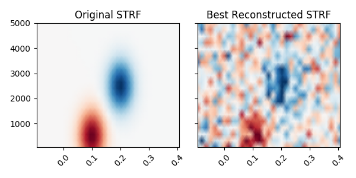
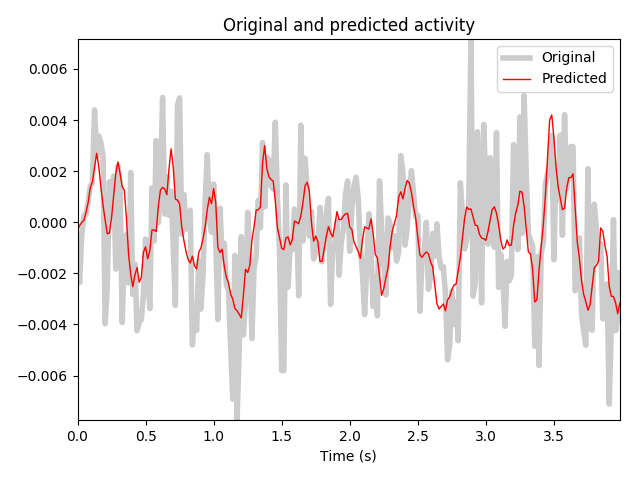

Note
Click here to download the full example code
Spectro-temporal receptive field (STRF) estimation on continuous data¶
This demonstrates how an encoding model can be fit with multiple continuous inputs. In this case, we simulate the model behind a spectro-temporal receptive field (or STRF). First, we create a linear filter that maps patterns in spectro-temporal space onto an output, representing neural activity. We fit a receptive field model that attempts to recover the original linear filter that was used to create this data.
References¶
Estimation of spectro-temporal and spatio-temporal receptive fields using modeling with continuous inputs is described in:
- 1
Theunissen, F. E. et al. Estimating spatio-temporal receptive fields of auditory and visual neurons from their responses to natural stimuli. Network 12, 289-316 (2001).
- 2
Willmore, B. & Smyth, D. Methods for first-order kernel estimation: simple-cell receptive fields from responses to natural scenes. Network 14, 553-77 (2003).
- 3(1,2)
Crosse, M. J., Di Liberto, G. M., Bednar, A. & Lalor, E. C. (2016). The Multivariate Temporal Response Function (mTRF) Toolbox: A MATLAB Toolbox for Relating Neural Signals to Continuous Stimuli. Frontiers in Human Neuroscience 10, 604. doi:10.3389/fnhum.2016.00604
- 4
Holdgraf, C. R. et al. Rapid tuning shifts in human auditory cortex enhance speech intelligibility. Nature Communications, 7, 13654 (2016). doi:10.1038/ncomms13654
# Authors: Chris Holdgraf <choldgraf@gmail.com>
# Eric Larson <larson.eric.d@gmail.com>
#
# License: BSD (3-clause)
import numpy as np
import matplotlib.pyplot as plt
import mne
from mne.decoding import ReceptiveField, TimeDelayingRidge
from scipy.stats import multivariate_normal
from scipy.io import loadmat
from sklearn.preprocessing import scale
rng = np.random.RandomState(1337) # To make this example reproducible
Load audio data¶
We’ll read in the audio data from 3 in order to simulate a response.
In addition, we’ll downsample the data along the time dimension in order to speed up computation. Note that depending on the input values, this may not be desired. For example if your input stimulus varies more quickly than 1/2 the sampling rate to which we are downsampling.
# Read in audio that's been recorded in epochs.
path_audio = mne.datasets.mtrf.data_path()
data = loadmat(path_audio + '/speech_data.mat')
audio = data['spectrogram'].T
sfreq = float(data['Fs'][0, 0])
n_decim = 2
audio = mne.filter.resample(audio, down=n_decim, npad='auto')
sfreq /= n_decim
Create a receptive field¶
We’ll simulate a linear receptive field for a theoretical neural signal. This defines how the signal will respond to power in this receptive field space.
n_freqs = 20
tmin, tmax = -0.1, 0.4
# To simulate the data we'll create explicit delays here
delays_samp = np.arange(np.round(tmin * sfreq),
np.round(tmax * sfreq) + 1).astype(int)
delays_sec = delays_samp / sfreq
freqs = np.linspace(50, 5000, n_freqs)
grid = np.array(np.meshgrid(delays_sec, freqs))
# We need data to be shaped as n_epochs, n_features, n_times, so swap axes here
grid = grid.swapaxes(0, -1).swapaxes(0, 1)
# Simulate a temporal receptive field with a Gabor filter
means_high = [.1, 500]
means_low = [.2, 2500]
cov = [[.001, 0], [0, 500000]]
gauss_high = multivariate_normal.pdf(grid, means_high, cov)
gauss_low = -1 * multivariate_normal.pdf(grid, means_low, cov)
weights = gauss_high + gauss_low # Combine to create the "true" STRF
kwargs = dict(vmax=np.abs(weights).max(), vmin=-np.abs(weights).max(),
cmap='RdBu_r', shading='gouraud')
fig, ax = plt.subplots()
ax.pcolormesh(delays_sec, freqs, weights, **kwargs)
ax.set(title='Simulated STRF', xlabel='Time Lags (s)', ylabel='Frequency (Hz)')
plt.setp(ax.get_xticklabels(), rotation=45)
plt.autoscale(tight=True)
mne.viz.tight_layout()

Simulate a neural response¶
Using this receptive field, we’ll create an artificial neural response to a stimulus.
To do this, we’ll create a time-delayed version of the receptive field, and then calculate the dot product between this and the stimulus. Note that this is effectively doing a convolution between the stimulus and the receptive field. See here for more information.
# Reshape audio to split into epochs, then make epochs the first dimension.
n_epochs, n_seconds = 16, 5
audio = audio[:, :int(n_seconds * sfreq * n_epochs)]
X = audio.reshape([n_freqs, n_epochs, -1]).swapaxes(0, 1)
n_times = X.shape[-1]
# Delay the spectrogram according to delays so it can be combined w/ the STRF
# Lags will now be in axis 1, then we reshape to vectorize
delays = np.arange(np.round(tmin * sfreq),
np.round(tmax * sfreq) + 1).astype(int)
# Iterate through indices and append
X_del = np.zeros((len(delays),) + X.shape)
for ii, ix_delay in enumerate(delays):
# These arrays will take/put particular indices in the data
take = [slice(None)] * X.ndim
put = [slice(None)] * X.ndim
if ix_delay > 0:
take[-1] = slice(None, -ix_delay)
put[-1] = slice(ix_delay, None)
elif ix_delay < 0:
take[-1] = slice(-ix_delay, None)
put[-1] = slice(None, ix_delay)
X_del[ii][tuple(put)] = X[tuple(take)]
# Now set the delayed axis to the 2nd dimension
X_del = np.rollaxis(X_del, 0, 3)
X_del = X_del.reshape([n_epochs, -1, n_times])
n_features = X_del.shape[1]
weights_sim = weights.ravel()
# Simulate a neural response to the sound, given this STRF
y = np.zeros((n_epochs, n_times))
for ii, iep in enumerate(X_del):
# Simulate this epoch and add random noise
noise_amp = .002
y[ii] = np.dot(weights_sim, iep) + noise_amp * rng.randn(n_times)
# Plot the first 2 trials of audio and the simulated electrode activity
X_plt = scale(np.hstack(X[:2]).T).T
y_plt = scale(np.hstack(y[:2]))
time = np.arange(X_plt.shape[-1]) / sfreq
_, (ax1, ax2) = plt.subplots(2, 1, figsize=(6, 6), sharex=True)
ax1.pcolormesh(time, freqs, X_plt, vmin=0, vmax=4, cmap='Reds')
ax1.set_title('Input auditory features')
ax1.set(ylim=[freqs.min(), freqs.max()], ylabel='Frequency (Hz)')
ax2.plot(time, y_plt)
ax2.set(xlim=[time.min(), time.max()], title='Simulated response',
xlabel='Time (s)', ylabel='Activity (a.u.)')
mne.viz.tight_layout()
Fit a model to recover this receptive field¶
Finally, we’ll use the mne.decoding.ReceptiveField class to recover
the linear receptive field of this signal. Note that properties of the
receptive field (e.g. smoothness) will depend on the autocorrelation in the
inputs and outputs.
# Create training and testing data
train, test = np.arange(n_epochs - 1), n_epochs - 1
X_train, X_test, y_train, y_test = X[train], X[test], y[train], y[test]
X_train, X_test, y_train, y_test = [np.rollaxis(ii, -1, 0) for ii in
(X_train, X_test, y_train, y_test)]
# Model the simulated data as a function of the spectrogram input
alphas = np.logspace(-3, 3, 7)
scores = np.zeros_like(alphas)
models = []
for ii, alpha in enumerate(alphas):
rf = ReceptiveField(tmin, tmax, sfreq, freqs, estimator=alpha)
rf.fit(X_train, y_train)
# Now make predictions about the model output, given input stimuli.
scores[ii] = rf.score(X_test, y_test)
models.append(rf)
times = rf.delays_ / float(rf.sfreq)
# Choose the model that performed best on the held out data
ix_best_alpha = np.argmax(scores)
best_mod = models[ix_best_alpha]
coefs = best_mod.coef_[0]
best_pred = best_mod.predict(X_test)[:, 0]
# Plot the original STRF, and the one that we recovered with modeling.
_, (ax1, ax2) = plt.subplots(1, 2, figsize=(6, 3), sharey=True, sharex=True)
ax1.pcolormesh(delays_sec, freqs, weights, **kwargs)
ax2.pcolormesh(times, rf.feature_names, coefs, **kwargs)
ax1.set_title('Original STRF')
ax2.set_title('Best Reconstructed STRF')
plt.setp([iax.get_xticklabels() for iax in [ax1, ax2]], rotation=45)
plt.autoscale(tight=True)
mne.viz.tight_layout()
# Plot the actual response and the predicted response on a held out stimulus
time_pred = np.arange(best_pred.shape[0]) / sfreq
fig, ax = plt.subplots()
ax.plot(time_pred, y_test, color='k', alpha=.2, lw=4)
ax.plot(time_pred, best_pred, color='r', lw=1)
ax.set(title='Original and predicted activity', xlabel='Time (s)')
ax.legend(['Original', 'Predicted'])
plt.autoscale(tight=True)
mne.viz.tight_layout()
- 
- 
Out:
Fitting 15 epochs, 20 channels
0%| | Sample : 0/3450 [00:00<?, ?it/s]
1%|1 | Sample : 41/3450 [00:00<00:01, 2554.65it/s]
2%|2 | Sample : 85/3450 [00:00<00:01, 2562.09it/s]
4%|3 | Sample : 137/3450 [00:00<00:01, 2587.58it/s]
5%|5 | Sample : 188/3450 [00:00<00:01, 2610.39it/s]
7%|6 | Sample : 240/3450 [00:00<00:01, 2635.88it/s]
8%|8 | Sample : 291/3450 [00:00<00:01, 2657.97it/s]
10%|# | Sample : 354/3450 [00:00<00:01, 2701.49it/s]
12%|#1 | Sample : 412/3450 [00:00<00:01, 2735.75it/s]
14%|#3 | Sample : 467/3450 [00:00<00:01, 2762.90it/s]
15%|#5 | Sample : 518/3450 [00:00<00:01, 2779.20it/s]
16%|#6 | Sample : 568/3450 [00:00<00:01, 2792.73it/s]
18%|#7 | Sample : 619/3450 [00:00<00:01, 2810.09it/s]
20%|#9 | Sample : 673/3450 [00:00<00:00, 2832.73it/s]
21%|##1 | Sample : 732/3450 [00:00<00:00, 2865.39it/s]
23%|##2 | Sample : 786/3450 [00:00<00:00, 2884.74it/s]
24%|##4 | Sample : 837/3450 [00:00<00:00, 2898.19it/s]
26%|##6 | Sample : 899/3450 [00:00<00:00, 2934.17it/s]
28%|##7 | Sample : 959/3450 [00:00<00:00, 2965.42it/s]
29%|##9 | Sample : 1016/3450 [00:00<00:00, 2989.40it/s]
31%|###1 | Sample : 1070/3450 [00:00<00:00, 3006.21it/s]
33%|###2 | Sample : 1129/3450 [00:00<00:00, 3033.13it/s]
34%|###4 | Sample : 1186/3450 [00:00<00:00, 3055.79it/s]
36%|###6 | Sample : 1243/3450 [00:00<00:00, 3075.29it/s]
38%|###7 | Sample : 1301/3450 [00:00<00:00, 3096.86it/s]
39%|###9 | Sample : 1358/3450 [00:00<00:00, 3115.23it/s]
41%|####1 | Sample : 1418/3450 [00:00<00:00, 3140.49it/s]
43%|####2 | Sample : 1476/3450 [00:00<00:00, 3160.12it/s]
44%|####4 | Sample : 1534/3450 [00:00<00:00, 3178.87it/s]
46%|####6 | Sample : 1593/3450 [00:00<00:00, 3198.16it/s]
48%|####7 | Sample : 1645/3450 [00:00<00:00, 3200.62it/s]
49%|####9 | Sample : 1697/3450 [00:00<00:00, 3202.24it/s]
51%|##### | Sample : 1752/3450 [00:00<00:00, 3212.40it/s]
52%|#####2 | Sample : 1806/3450 [00:00<00:00, 3218.44it/s]
54%|#####3 | Sample : 1859/3450 [00:00<00:00, 3221.49it/s]
55%|#####4 | Sample : 1895/3450 [00:00<00:00, 3153.06it/s]
57%|#####6 | Sample : 1952/3450 [00:00<00:00, 3169.07it/s]
58%|#####8 | Sample : 2006/3450 [00:00<00:00, 3177.56it/s]
60%|#####9 | Sample : 2063/3450 [00:00<00:00, 3194.54it/s]
61%|######1 | Sample : 2116/3450 [00:00<00:00, 3197.77it/s]
63%|######2 | Sample : 2168/3450 [00:00<00:00, 3199.84it/s]
64%|######4 | Sample : 2219/3450 [00:00<00:00, 3197.96it/s]
66%|######5 | Sample : 2273/3450 [00:00<00:00, 3206.19it/s]
68%|######7 | Sample : 2335/3450 [00:00<00:00, 3233.27it/s]
69%|######9 | Sample : 2392/3450 [00:00<00:00, 3245.76it/s]
71%|####### | Sample : 2442/3450 [00:00<00:00, 3238.59it/s]
72%|#######2 | Sample : 2496/3450 [00:00<00:00, 3242.79it/s]
74%|#######4 | Sample : 2558/3450 [00:00<00:00, 3267.67it/s]
76%|#######5 | Sample : 2612/3450 [00:00<00:00, 3272.31it/s]
77%|#######7 | Sample : 2672/3450 [00:00<00:00, 3291.93it/s]
79%|#######9 | Sample : 2737/3450 [00:00<00:00, 3322.80it/s]
81%|########1 | Sample : 2806/3450 [00:00<00:00, 3361.01it/s]
83%|########3 | Sample : 2866/3450 [00:00<00:00, 3376.82it/s]
85%|########4 | Sample : 2918/3450 [00:00<00:00, 3368.01it/s]
87%|########6 | Sample : 2987/3450 [00:00<00:00, 3405.12it/s]
88%|########8 | Sample : 3039/3450 [00:00<00:00, 3396.87it/s]
90%|########9 | Sample : 3094/3450 [00:00<00:00, 3396.84it/s]
91%|#########1| Sample : 3147/3450 [00:00<00:00, 3390.28it/s]
93%|#########2| Sample : 3202/3450 [00:00<00:00, 3390.64it/s]
94%|#########4| Sample : 3255/3450 [00:00<00:00, 3385.13it/s]
96%|#########5| Sample : 3308/3450 [00:00<00:00, 3380.74it/s]
97%|#########7| Sample : 3362/3450 [00:00<00:00, 3380.30it/s]
99%|#########9| Sample : 3418/3450 [00:01<00:00, 3385.11it/s]
100%|##########| Sample : 3450/3450 [00:01<00:00, 3418.57it/s]
Fitting 15 epochs, 20 channels
0%| | Sample : 0/3450 [00:00<?, ?it/s]
1%|1 | Sample : 49/3450 [00:00<00:01, 3013.06it/s]
3%|2 | Sample : 96/3450 [00:00<00:01, 3008.41it/s]
4%|4 | Sample : 142/3450 [00:00<00:01, 2998.67it/s]
5%|5 | Sample : 185/3450 [00:00<00:01, 2979.30it/s]
7%|6 | Sample : 241/3450 [00:00<00:01, 3000.87it/s]
8%|8 | Sample : 293/3450 [00:00<00:01, 3010.82it/s]
10%|# | Sample : 346/3450 [00:00<00:01, 3023.28it/s]
12%|#1 | Sample : 399/3450 [00:00<00:01, 3035.65it/s]
13%|#3 | Sample : 454/3450 [00:00<00:00, 3051.20it/s]
15%|#4 | Sample : 507/3450 [00:00<00:00, 3061.88it/s]
16%|#6 | Sample : 559/3450 [00:00<00:00, 3069.28it/s]
18%|#7 | Sample : 611/3450 [00:00<00:00, 3075.71it/s]
19%|#9 | Sample : 666/3450 [00:00<00:00, 3090.14it/s]
21%|## | Sample : 721/3450 [00:00<00:00, 3104.11it/s]
22%|##2 | Sample : 773/3450 [00:00<00:00, 3109.20it/s]
24%|##3 | Sample : 825/3450 [00:00<00:00, 3113.81it/s]
26%|##5 | Sample : 880/3450 [00:00<00:00, 3126.14it/s]
27%|##7 | Sample : 935/3450 [00:00<00:00, 3138.90it/s]
29%|##8 | Sample : 988/3450 [00:00<00:00, 3145.79it/s]
30%|##9 | Sample : 1033/3450 [00:00<00:00, 3126.42it/s]
31%|###1 | Sample : 1084/3450 [00:00<00:00, 3128.20it/s]
33%|###2 | Sample : 1138/3450 [00:00<00:00, 3139.14it/s]
35%|###4 | Sample : 1192/3450 [00:00<00:00, 3149.83it/s]
36%|###6 | Sample : 1246/3450 [00:00<00:00, 3159.54it/s]
38%|###7 | Sample : 1301/3450 [00:00<00:00, 3171.92it/s]
39%|###9 | Sample : 1359/3450 [00:00<00:00, 3190.86it/s]
41%|####1 | Sample : 1427/3450 [00:00<00:00, 3231.11it/s]
43%|####3 | Sample : 1493/3450 [00:00<00:00, 3265.86it/s]
45%|####4 | Sample : 1551/3450 [00:00<00:00, 3280.09it/s]
47%|####6 | Sample : 1609/3450 [00:00<00:00, 3293.91it/s]
48%|####8 | Sample : 1660/3450 [00:00<00:00, 3285.65it/s]
50%|####9 | Sample : 1709/3450 [00:00<00:00, 3273.32it/s]
51%|#####1 | Sample : 1761/3450 [00:00<00:00, 3268.87it/s]
53%|#####2 | Sample : 1812/3450 [00:00<00:00, 3263.85it/s]
54%|#####4 | Sample : 1867/3450 [00:00<00:00, 3270.43it/s]
56%|#####5 | Sample : 1921/3450 [00:00<00:00, 3272.54it/s]
57%|#####7 | Sample : 1975/3450 [00:00<00:00, 3275.07it/s]
59%|#####8 | Sample : 2034/3450 [00:00<00:00, 3291.17it/s]
61%|###### | Sample : 2094/3450 [00:00<00:00, 3310.78it/s]
62%|######2 | Sample : 2151/3450 [00:00<00:00, 3319.86it/s]
64%|######4 | Sample : 2208/3450 [00:00<00:00, 3330.77it/s]
66%|######5 | Sample : 2268/3450 [00:00<00:00, 3347.66it/s]
68%|######7 | Sample : 2329/3450 [00:00<00:00, 3367.95it/s]
69%|######9 | Sample : 2386/3450 [00:00<00:00, 3374.50it/s]
71%|####### | Sample : 2444/3450 [00:00<00:00, 3385.94it/s]
73%|#######2 | Sample : 2510/3450 [00:00<00:00, 3416.32it/s]
74%|#######4 | Sample : 2569/3450 [00:00<00:00, 3425.97it/s]
76%|#######6 | Sample : 2627/3450 [00:00<00:00, 3434.63it/s]
78%|#######7 | Sample : 2688/3450 [00:00<00:00, 3449.79it/s]
80%|#######9 | Sample : 2749/3450 [00:00<00:00, 3463.71it/s]
81%|########1 | Sample : 2806/3450 [00:00<00:00, 3468.15it/s]
83%|########3 | Sample : 2864/3450 [00:00<00:00, 3473.07it/s]
85%|########4 | Sample : 2922/3450 [00:00<00:00, 3478.56it/s]
86%|########6 | Sample : 2983/3450 [00:00<00:00, 3492.78it/s]
88%|########8 | Sample : 3040/3450 [00:00<00:00, 3493.51it/s]
90%|########9 | Sample : 3102/3450 [00:00<00:00, 3510.35it/s]
92%|#########1| Sample : 3163/3450 [00:00<00:00, 3523.86it/s]
94%|#########3| Sample : 3228/3450 [00:00<00:00, 3546.68it/s]
95%|#########5| Sample : 3284/3450 [00:00<00:00, 3541.62it/s]
97%|#########6| Sample : 3340/3450 [00:00<00:00, 3536.94it/s]
98%|#########8| Sample : 3398/3450 [00:00<00:00, 3539.93it/s]
100%|##########| Sample : 3450/3450 [00:01<00:00, 3440.19it/s]
Fitting 15 epochs, 20 channels
0%| | Sample : 0/3450 [00:00<?, ?it/s]
2%|1 | Sample : 64/3450 [00:00<00:00, 3995.88it/s]
4%|3 | Sample : 134/3450 [00:00<00:00, 4011.03it/s]
6%|5 | Sample : 202/3450 [00:00<00:00, 4019.14it/s]
8%|7 | Sample : 269/3450 [00:00<00:00, 4024.17it/s]
10%|9 | Sample : 342/3450 [00:00<00:00, 4047.24it/s]
12%|#1 | Sample : 413/3450 [00:00<00:00, 4062.87it/s]
14%|#3 | Sample : 470/3450 [00:00<00:00, 4033.65it/s]
15%|#5 | Sample : 525/3450 [00:00<00:00, 3994.69it/s]
17%|#6 | Sample : 583/3450 [00:00<00:00, 3971.20it/s]
19%|#8 | Sample : 644/3450 [00:00<00:00, 3961.57it/s]
20%|## | Sample : 700/3450 [00:00<00:00, 3932.03it/s]
22%|##2 | Sample : 765/3450 [00:00<00:00, 3936.50it/s]
24%|##4 | Sample : 837/3450 [00:00<00:00, 3961.08it/s]
26%|##6 | Sample : 914/3450 [00:00<00:00, 3994.08it/s]
29%|##8 | Sample : 988/3450 [00:00<00:00, 4019.73it/s]
30%|### | Sample : 1047/3450 [00:00<00:00, 3998.91it/s]
32%|###1 | Sample : 1103/3450 [00:00<00:00, 3968.76it/s]
34%|###4 | Sample : 1178/3450 [00:00<00:00, 3998.88it/s]
36%|###5 | Sample : 1233/3450 [00:00<00:00, 3964.40it/s]
37%|###7 | Sample : 1289/3450 [00:00<00:00, 3935.36it/s]
39%|###8 | Sample : 1343/3450 [00:00<00:00, 3901.54it/s]
41%|#### | Sample : 1400/3450 [00:00<00:00, 3880.43it/s]
42%|####2 | Sample : 1454/3450 [00:00<00:00, 3847.24it/s]
44%|####3 | Sample : 1507/3450 [00:00<00:00, 3815.58it/s]
45%|####5 | Sample : 1561/3450 [00:00<00:00, 3788.32it/s]
47%|####6 | Sample : 1619/3450 [00:00<00:00, 3776.03it/s]
49%|####8 | Sample : 1674/3450 [00:00<00:00, 3756.01it/s]
50%|##### | Sample : 1731/3450 [00:00<00:00, 3744.94it/s]
52%|#####1 | Sample : 1791/3450 [00:00<00:00, 3744.24it/s]
54%|#####3 | Sample : 1849/3450 [00:00<00:00, 3738.08it/s]
56%|#####5 | Sample : 1916/3450 [00:00<00:00, 3756.57it/s]
57%|#####7 | Sample : 1978/3450 [00:00<00:00, 3761.51it/s]
59%|#####9 | Sample : 2045/3450 [00:00<00:00, 3780.14it/s]
61%|###### | Sample : 2104/3450 [00:00<00:00, 3773.22it/s]
63%|######2 | Sample : 2163/3450 [00:00<00:00, 3765.84it/s]
64%|######4 | Sample : 2224/3450 [00:00<00:00, 3765.73it/s]
66%|######6 | Sample : 2288/3450 [00:00<00:00, 3776.66it/s]
68%|######7 | Sample : 2341/3450 [00:00<00:00, 3750.13it/s]
69%|######9 | Sample : 2394/3450 [00:00<00:00, 3723.79it/s]
71%|#######1 | Sample : 2457/3450 [00:00<00:00, 3733.21it/s]
73%|#######3 | Sample : 2520/3450 [00:00<00:00, 3740.98it/s]
75%|#######4 | Sample : 2579/3450 [00:00<00:00, 3735.78it/s]
76%|#######6 | Sample : 2633/3450 [00:00<00:00, 3711.86it/s]
78%|#######7 | Sample : 2688/3450 [00:00<00:00, 3696.79it/s]
80%|#######9 | Sample : 2754/3450 [00:00<00:00, 3713.66it/s]
82%|########1 | Sample : 2812/3450 [00:00<00:00, 3708.56it/s]
83%|########3 | Sample : 2870/3450 [00:00<00:00, 3703.31it/s]
85%|########4 | Sample : 2922/3450 [00:00<00:00, 3674.17it/s]
86%|########6 | Sample : 2974/3450 [00:00<00:00, 3649.06it/s]
88%|########7 | Sample : 3028/3450 [00:00<00:00, 3633.95it/s]
89%|########9 | Sample : 3082/3450 [00:00<00:00, 3619.95it/s]
91%|######### | Sample : 3135/3450 [00:00<00:00, 3601.07it/s]
92%|#########2| Sample : 3188/3450 [00:00<00:00, 3583.75it/s]
94%|#########4| Sample : 3244/3450 [00:00<00:00, 3578.49it/s]
96%|#########5| Sample : 3295/3450 [00:00<00:00, 3555.48it/s]
97%|#########7| Sample : 3356/3450 [00:00<00:00, 3565.74it/s]
99%|#########8| Sample : 3410/3450 [00:00<00:00, 3555.17it/s]
100%|##########| Sample : 3450/3450 [00:00<00:00, 3708.28it/s]
Fitting 15 epochs, 20 channels
0%| | Sample : 0/3450 [00:00<?, ?it/s]
2%|1 | Sample : 64/3450 [00:00<00:00, 3941.78it/s]
4%|3 | Sample : 130/3450 [00:00<00:00, 3949.75it/s]
6%|5 | Sample : 198/3450 [00:00<00:00, 3961.58it/s]
8%|7 | Sample : 268/3450 [00:00<00:00, 3978.28it/s]
10%|9 | Sample : 334/3450 [00:00<00:00, 3984.50it/s]
12%|#1 | Sample : 401/3450 [00:00<00:00, 3993.80it/s]
13%|#3 | Sample : 458/3450 [00:00<00:00, 3969.68it/s]
15%|#4 | Sample : 516/3450 [00:00<00:00, 3950.45it/s]
17%|#6 | Sample : 573/3450 [00:00<00:00, 3926.74it/s]
18%|#8 | Sample : 624/3450 [00:00<00:00, 3879.30it/s]
20%|#9 | Sample : 682/3450 [00:00<00:00, 3864.71it/s]
21%|##1 | Sample : 737/3450 [00:00<00:00, 3836.57it/s]
23%|##3 | Sample : 795/3450 [00:00<00:00, 3825.27it/s]
25%|##4 | Sample : 851/3450 [00:00<00:00, 3804.68it/s]
26%|##6 | Sample : 907/3450 [00:00<00:00, 3785.38it/s]
28%|##7 | Sample : 963/3450 [00:00<00:00, 3768.65it/s]
29%|##9 | Sample : 1016/3450 [00:00<00:00, 3742.64it/s]
31%|###1 | Sample : 1076/3450 [00:00<00:00, 3740.41it/s]
33%|###2 | Sample : 1134/3450 [00:00<00:00, 3732.42it/s]
34%|###4 | Sample : 1188/3450 [00:00<00:00, 3711.88it/s]
36%|###6 | Sample : 1250/3450 [00:00<00:00, 3716.52it/s]
38%|###7 | Sample : 1302/3450 [00:00<00:00, 3689.94it/s]
39%|###9 | Sample : 1359/3450 [00:00<00:00, 3683.28it/s]
41%|####1 | Sample : 1419/3450 [00:00<00:00, 3685.21it/s]
43%|####2 | Sample : 1477/3450 [00:00<00:00, 3681.97it/s]
45%|####4 | Sample : 1541/3450 [00:00<00:00, 3693.88it/s]
46%|####6 | Sample : 1598/3450 [00:00<00:00, 3684.28it/s]
48%|####7 | Sample : 1653/3450 [00:00<00:00, 3669.48it/s]
49%|####9 | Sample : 1707/3450 [00:00<00:00, 3651.52it/s]
51%|#####1 | Sample : 1766/3450 [00:00<00:00, 3653.28it/s]
53%|#####2 | Sample : 1819/3450 [00:00<00:00, 3630.59it/s]
54%|#####4 | Sample : 1873/3450 [00:00<00:00, 3614.37it/s]
56%|#####5 | Sample : 1924/3450 [00:00<00:00, 3588.65it/s]
57%|#####7 | Sample : 1976/3450 [00:00<00:00, 3566.90it/s]
59%|#####8 | Sample : 2030/3450 [00:00<00:00, 3554.38it/s]
61%|###### | Sample : 2093/3450 [00:00<00:00, 3569.13it/s]
62%|######2 | Sample : 2155/3450 [00:00<00:00, 3582.74it/s]
64%|######3 | Sample : 2206/3450 [00:00<00:00, 3560.64it/s]
65%|######5 | Sample : 2259/3450 [00:00<00:00, 3544.11it/s]
67%|######7 | Sample : 2314/3450 [00:00<00:00, 3537.03it/s]
69%|######8 | Sample : 2377/3450 [00:00<00:00, 3552.54it/s]
71%|####### | Sample : 2435/3450 [00:00<00:00, 3555.35it/s]
72%|#######2 | Sample : 2493/3450 [00:00<00:00, 3558.22it/s]
74%|#######4 | Sample : 2555/3450 [00:00<00:00, 3571.62it/s]
76%|#######5 | Sample : 2610/3450 [00:00<00:00, 3564.53it/s]
77%|#######7 | Sample : 2664/3450 [00:00<00:00, 3554.39it/s]
79%|#######8 | Sample : 2722/3450 [00:00<00:00, 3555.57it/s]
80%|######## | Sample : 2777/3450 [00:00<00:00, 3547.20it/s]
82%|########2 | Sample : 2831/3450 [00:00<00:00, 3537.62it/s]
84%|########3 | Sample : 2884/3450 [00:00<00:00, 3522.54it/s]
85%|########5 | Sample : 2935/3450 [00:00<00:00, 3503.12it/s]
87%|########6 | Sample : 2992/3450 [00:00<00:00, 3502.35it/s]
88%|########8 | Sample : 3041/3450 [00:00<00:00, 3476.46it/s]
90%|########9 | Sample : 3092/3450 [00:00<00:00, 3456.77it/s]
91%|#########1| Sample : 3149/3450 [00:00<00:00, 3460.75it/s]
93%|#########3| Sample : 3209/3450 [00:00<00:00, 3472.58it/s]
95%|#########5| Sample : 3279/3450 [00:00<00:00, 3507.32it/s]
97%|#########7| Sample : 3349/3450 [00:00<00:00, 3540.78it/s]
99%|#########8| Sample : 3408/3450 [00:00<00:00, 3547.21it/s]
100%|##########| Sample : 3450/3450 [00:00<00:00, 3579.85it/s]
Fitting 15 epochs, 20 channels
0%| | Sample : 0/3450 [00:00<?, ?it/s]
2%|1 | Sample : 58/3450 [00:00<00:00, 3624.07it/s]
4%|3 | Sample : 123/3450 [00:00<00:00, 3641.32it/s]
6%|5 | Sample : 191/3450 [00:00<00:00, 3665.68it/s]
7%|7 | Sample : 253/3450 [00:00<00:00, 3674.46it/s]
9%|8 | Sample : 307/3450 [00:00<00:00, 3654.57it/s]
11%|# | Sample : 363/3450 [00:00<00:00, 3643.36it/s]
12%|#2 | Sample : 423/3450 [00:00<00:00, 3646.52it/s]
14%|#3 | Sample : 480/3450 [00:00<00:00, 3642.22it/s]
15%|#5 | Sample : 533/3450 [00:00<00:00, 3620.69it/s]
17%|#7 | Sample : 587/3450 [00:00<00:00, 3604.22it/s]
19%|#8 | Sample : 645/3450 [00:00<00:00, 3604.66it/s]
21%|## | Sample : 713/3450 [00:00<00:00, 3629.09it/s]
22%|##2 | Sample : 776/3450 [00:00<00:00, 3643.10it/s]
24%|##4 | Sample : 831/3450 [00:00<00:00, 3629.38it/s]
26%|##5 | Sample : 888/3450 [00:00<00:00, 3623.08it/s]
27%|##7 | Sample : 945/3450 [00:00<00:00, 3618.80it/s]
29%|##9 | Sample : 1002/3450 [00:00<00:00, 3613.10it/s]
31%|### | Sample : 1058/3450 [00:00<00:00, 3606.16it/s]
32%|###2 | Sample : 1118/3450 [00:00<00:00, 3610.35it/s]
34%|###3 | Sample : 1172/3450 [00:00<00:00, 3595.34it/s]
35%|###5 | Sample : 1223/3450 [00:00<00:00, 3571.38it/s]
37%|###6 | Sample : 1275/3450 [00:00<00:00, 3551.05it/s]
39%|###8 | Sample : 1331/3450 [00:00<00:00, 3546.58it/s]
40%|#### | Sample : 1386/3450 [00:00<00:00, 3540.51it/s]
42%|####1 | Sample : 1438/3450 [00:00<00:00, 3521.57it/s]
43%|####3 | Sample : 1494/3450 [00:00<00:00, 3517.90it/s]
45%|####5 | Sample : 1553/3450 [00:00<00:00, 3524.59it/s]
47%|####6 | Sample : 1615/3450 [00:00<00:00, 3539.59it/s]
48%|####8 | Sample : 1672/3450 [00:00<00:00, 3538.07it/s]
50%|##### | Sample : 1729/3450 [00:00<00:00, 3536.53it/s]
52%|#####1 | Sample : 1787/3450 [00:00<00:00, 3539.57it/s]
54%|#####3 | Sample : 1849/3450 [00:00<00:00, 3552.99it/s]
55%|#####5 | Sample : 1907/3450 [00:00<00:00, 3555.25it/s]
57%|#####6 | Sample : 1964/3450 [00:00<00:00, 3553.55it/s]
59%|#####8 | Sample : 2023/3450 [00:00<00:00, 3559.06it/s]
60%|###### | Sample : 2085/3450 [00:00<00:00, 3572.29it/s]
62%|######2 | Sample : 2142/3450 [00:00<00:00, 3571.58it/s]
64%|######3 | Sample : 2200/3450 [00:00<00:00, 3573.54it/s]
65%|######5 | Sample : 2259/3450 [00:00<00:00, 3578.20it/s]
67%|######7 | Sample : 2317/3450 [00:00<00:00, 3577.42it/s]
69%|######8 | Sample : 2367/3450 [00:00<00:00, 3548.46it/s]
70%|####### | Sample : 2424/3450 [00:00<00:00, 3547.54it/s]
72%|#######1 | Sample : 2478/3450 [00:00<00:00, 3535.50it/s]
74%|#######3 | Sample : 2537/3450 [00:00<00:00, 3540.87it/s]
75%|#######5 | Sample : 2589/3450 [00:00<00:00, 3524.34it/s]
77%|#######6 | Sample : 2648/3450 [00:00<00:00, 3531.36it/s]
78%|#######8 | Sample : 2705/3450 [00:00<00:00, 3532.28it/s]
80%|######## | Sample : 2769/3450 [00:00<00:00, 3551.26it/s]
82%|########2 | Sample : 2829/3450 [00:00<00:00, 3559.03it/s]
84%|########3 | Sample : 2890/3450 [00:00<00:00, 3569.80it/s]
86%|########5 | Sample : 2950/3450 [00:00<00:00, 3576.47it/s]
87%|########7 | Sample : 3014/3450 [00:00<00:00, 3594.31it/s]
89%|########9 | Sample : 3073/3450 [00:00<00:00, 3597.20it/s]
91%|######### | Sample : 3133/3450 [00:00<00:00, 3603.18it/s]
93%|#########2| Sample : 3197/3450 [00:00<00:00, 3618.38it/s]
94%|#########4| Sample : 3260/3450 [00:00<00:00, 3632.77it/s]
96%|#########6| Sample : 3312/3450 [00:00<00:00, 3607.97it/s]
98%|#########7| Sample : 3365/3450 [00:00<00:00, 3587.96it/s]
99%|#########9| Sample : 3420/3450 [00:00<00:00, 3579.43it/s]
100%|##########| Sample : 3450/3450 [00:00<00:00, 3587.65it/s]
Fitting 15 epochs, 20 channels
0%| | Sample : 0/3450 [00:00<?, ?it/s]
2%|1 | Sample : 56/3450 [00:00<00:00, 3463.81it/s]
3%|3 | Sample : 112/3450 [00:00<00:00, 3465.21it/s]
5%|4 | Sample : 169/3450 [00:00<00:00, 3467.31it/s]
7%|6 | Sample : 231/3450 [00:00<00:00, 3481.93it/s]
8%|8 | Sample : 288/3450 [00:00<00:00, 3483.14it/s]
11%|# | Sample : 364/3450 [00:00<00:00, 3529.70it/s]
13%|#2 | Sample : 434/3450 [00:00<00:00, 3562.35it/s]
14%|#4 | Sample : 494/3450 [00:00<00:00, 3569.87it/s]
16%|#5 | Sample : 551/3450 [00:00<00:00, 3567.35it/s]
18%|#7 | Sample : 609/3450 [00:00<00:00, 3568.78it/s]
19%|#9 | Sample : 667/3450 [00:00<00:00, 3569.85it/s]
21%|## | Sample : 723/3450 [00:00<00:00, 3561.88it/s]
23%|##2 | Sample : 781/3450 [00:00<00:00, 3563.95it/s]
24%|##4 | Sample : 838/3450 [00:00<00:00, 3562.46it/s]
26%|##6 | Sample : 899/3450 [00:00<00:00, 3571.59it/s]
27%|##7 | Sample : 945/3450 [00:00<00:00, 3526.20it/s]
29%|##9 | Sample : 1003/3450 [00:00<00:00, 3528.71it/s]
30%|### | Sample : 1045/3450 [00:00<00:00, 3467.93it/s]
32%|###2 | Sample : 1107/3450 [00:00<00:00, 3483.96it/s]
34%|###3 | Sample : 1167/3450 [00:00<00:00, 3494.49it/s]
35%|###5 | Sample : 1223/3450 [00:00<00:00, 3491.84it/s]
37%|###7 | Sample : 1280/3450 [00:00<00:00, 3492.22it/s]
39%|###8 | Sample : 1339/3450 [00:00<00:00, 3500.38it/s]
41%|#### | Sample : 1399/3450 [00:00<00:00, 3509.37it/s]
42%|####2 | Sample : 1455/3450 [00:00<00:00, 3506.34it/s]
44%|####3 | Sample : 1511/3450 [00:00<00:00, 3504.73it/s]
45%|####5 | Sample : 1569/3450 [00:00<00:00, 3508.54it/s]
47%|####7 | Sample : 1630/3450 [00:00<00:00, 3520.80it/s]
49%|####8 | Sample : 1687/3450 [00:00<00:00, 3521.56it/s]
51%|##### | Sample : 1745/3450 [00:00<00:00, 3524.44it/s]
52%|#####2 | Sample : 1802/3450 [00:00<00:00, 3525.96it/s]
54%|#####3 | Sample : 1859/3450 [00:00<00:00, 3527.14it/s]
55%|#####5 | Sample : 1912/3450 [00:00<00:00, 3515.53it/s]
57%|#####6 | Sample : 1965/3450 [00:00<00:00, 3502.69it/s]
59%|#####8 | Sample : 2020/3450 [00:00<00:00, 3497.67it/s]
60%|###### | Sample : 2077/3450 [00:00<00:00, 3499.35it/s]
62%|######1 | Sample : 2129/3450 [00:00<00:00, 3483.57it/s]
63%|######3 | Sample : 2183/3450 [00:00<00:00, 3475.10it/s]
65%|######4 | Sample : 2237/3450 [00:00<00:00, 3468.49it/s]
66%|######6 | Sample : 2293/3450 [00:00<00:00, 3469.59it/s]
68%|######8 | Sample : 2351/3450 [00:00<00:00, 3474.83it/s]
70%|######9 | Sample : 2406/3450 [00:00<00:00, 3471.26it/s]
71%|#######1 | Sample : 2460/3450 [00:00<00:00, 3464.64it/s]
73%|#######2 | Sample : 2517/3450 [00:00<00:00, 3466.89it/s]
75%|#######4 | Sample : 2572/3450 [00:00<00:00, 3462.98it/s]
76%|#######6 | Sample : 2624/3450 [00:00<00:00, 3449.86it/s]
78%|#######7 | Sample : 2687/3450 [00:00<00:00, 3470.51it/s]
80%|#######9 | Sample : 2743/3450 [00:00<00:00, 3468.76it/s]
81%|########1 | Sample : 2809/3450 [00:00<00:00, 3495.09it/s]
83%|########2 | Sample : 2863/3450 [00:00<00:00, 3485.62it/s]
85%|########4 | Sample : 2919/3450 [00:00<00:00, 3483.65it/s]
86%|########6 | Sample : 2977/3450 [00:00<00:00, 3490.28it/s]
88%|########7 | Sample : 3030/3450 [00:00<00:00, 3479.38it/s]
89%|########9 | Sample : 3081/3450 [00:00<00:00, 3462.36it/s]
91%|######### | Sample : 3133/3450 [00:00<00:00, 3447.80it/s]
92%|#########2| Sample : 3186/3450 [00:00<00:00, 3438.88it/s]
94%|#########3| Sample : 3243/3450 [00:00<00:00, 3441.91it/s]
96%|#########5| Sample : 3297/3450 [00:00<00:00, 3436.58it/s]
97%|#########7| Sample : 3351/3450 [00:00<00:00, 3433.42it/s]
99%|#########8| Sample : 3401/3450 [00:00<00:00, 3416.19it/s]
100%|##########| Sample : 3450/3450 [00:00<00:00, 3503.51it/s]
Fitting 15 epochs, 20 channels
0%| | Sample : 0/3450 [00:00<?, ?it/s]
2%|1 | Sample : 55/3450 [00:00<00:01, 3375.13it/s]
3%|3 | Sample : 107/3450 [00:00<00:00, 3367.95it/s]
5%|4 | Sample : 166/3450 [00:00<00:00, 3382.19it/s]
7%|6 | Sample : 226/3450 [00:00<00:00, 3397.96it/s]
8%|8 | Sample : 279/3450 [00:00<00:00, 3393.39it/s]
10%|9 | Sample : 336/3450 [00:00<00:00, 3399.84it/s]
11%|#1 | Sample : 394/3450 [00:00<00:00, 3407.85it/s]
13%|#3 | Sample : 456/3450 [00:00<00:00, 3428.04it/s]
15%|#4 | Sample : 513/3450 [00:00<00:00, 3432.76it/s]
17%|#6 | Sample : 570/3450 [00:00<00:00, 3437.36it/s]
18%|#8 | Sample : 627/3450 [00:00<00:00, 3442.37it/s]
20%|#9 | Sample : 684/3450 [00:00<00:00, 3447.76it/s]
21%|##1 | Sample : 739/3450 [00:00<00:00, 3445.54it/s]
23%|##3 | Sample : 796/3450 [00:00<00:00, 3449.89it/s]
25%|##4 | Sample : 850/3450 [00:00<00:00, 3445.71it/s]
26%|##6 | Sample : 907/3450 [00:00<00:00, 3449.58it/s]
27%|##7 | Sample : 947/3450 [00:00<00:00, 3381.42it/s]
29%|##8 | Sample : 997/3450 [00:00<00:00, 3363.75it/s]
30%|### | Sample : 1044/3450 [00:00<00:00, 3338.35it/s]
32%|###1 | Sample : 1099/3450 [00:00<00:00, 3341.98it/s]
34%|###3 | Sample : 1164/3450 [00:00<00:00, 3371.10it/s]
36%|###5 | Sample : 1236/3450 [00:00<00:00, 3413.21it/s]
38%|###7 | Sample : 1308/3450 [00:00<00:00, 3454.33it/s]
40%|#### | Sample : 1385/3450 [00:00<00:00, 3503.06it/s]
42%|####2 | Sample : 1456/3450 [00:00<00:00, 3540.04it/s]
44%|####4 | Sample : 1529/3450 [00:00<00:00, 3579.31it/s]
47%|####6 | Sample : 1607/3450 [00:00<00:00, 3626.34it/s]
48%|####8 | Sample : 1665/3450 [00:00<00:00, 3623.83it/s]
50%|####9 | Sample : 1718/3450 [00:00<00:00, 3606.88it/s]
51%|#####1 | Sample : 1772/3450 [00:00<00:00, 3594.09it/s]
53%|#####3 | Sample : 1830/3450 [00:00<00:00, 3594.61it/s]
55%|#####4 | Sample : 1891/3450 [00:00<00:00, 3601.70it/s]
56%|#####6 | Sample : 1947/3450 [00:00<00:00, 3595.26it/s]
58%|#####8 | Sample : 2003/3450 [00:00<00:00, 3587.35it/s]
60%|#####9 | Sample : 2063/3450 [00:00<00:00, 3594.61it/s]
61%|######1 | Sample : 2119/3450 [00:00<00:00, 3586.24it/s]
63%|######3 | Sample : 2177/3450 [00:00<00:00, 3584.53it/s]
65%|######4 | Sample : 2228/3450 [00:00<00:00, 3561.13it/s]
66%|######6 | Sample : 2294/3450 [00:00<00:00, 3583.09it/s]
68%|######8 | Sample : 2351/3450 [00:00<00:00, 3579.93it/s]
70%|######9 | Sample : 2410/3450 [00:00<00:00, 3583.93it/s]
72%|#######1 | Sample : 2478/3450 [00:00<00:00, 3611.78it/s]
74%|#######3 | Sample : 2540/3450 [00:00<00:00, 3620.64it/s]
75%|#######5 | Sample : 2593/3450 [00:00<00:00, 3603.34it/s]
77%|#######6 | Sample : 2648/3450 [00:00<00:00, 3593.71it/s]
78%|#######8 | Sample : 2705/3450 [00:00<00:00, 3591.30it/s]
81%|######## | Sample : 2781/3450 [00:00<00:00, 3635.34it/s]
82%|########2 | Sample : 2845/3450 [00:00<00:00, 3651.02it/s]
84%|########4 | Sample : 2905/3450 [00:00<00:00, 3653.23it/s]
86%|########5 | Sample : 2958/3450 [00:00<00:00, 3632.05it/s]
87%|########7 | Sample : 3016/3450 [00:00<00:00, 3631.06it/s]
89%|########8 | Sample : 3070/3450 [00:00<00:00, 3614.68it/s]
90%|######### | Sample : 3120/3450 [00:00<00:00, 3582.28it/s]
92%|#########1| Sample : 3171/3450 [00:00<00:00, 3557.82it/s]
94%|#########3| Sample : 3227/3450 [00:00<00:00, 3552.10it/s]
95%|#########4| Sample : 3276/3450 [00:00<00:00, 3523.00it/s]
97%|#########6| Sample : 3337/3450 [00:00<00:00, 3535.49it/s]
99%|#########8| Sample : 3404/3450 [00:00<00:00, 3562.44it/s]
100%|##########| Sample : 3450/3450 [00:00<00:00, 3641.53it/s]
Visualize the effects of regularization¶
Above we fit a mne.decoding.ReceptiveField model for one of many
values for the ridge regularization parameter. Here we will plot the model
score as well as the model coefficients for each value, in order to
visualize how coefficients change with different levels of regularization.
These issues as well as the STRF pipeline are described in detail
in 1, 2, and 4.
# Plot model score for each ridge parameter
fig = plt.figure(figsize=(10, 4))
ax = plt.subplot2grid([2, len(alphas)], [1, 0], 1, len(alphas))
ax.plot(np.arange(len(alphas)), scores, marker='o', color='r')
ax.annotate('Best parameter', (ix_best_alpha, scores[ix_best_alpha]),
(ix_best_alpha, scores[ix_best_alpha] - .1),
arrowprops={'arrowstyle': '->'})
plt.xticks(np.arange(len(alphas)), ["%.0e" % ii for ii in alphas])
ax.set(xlabel="Ridge regularization value", ylabel="Score ($R^2$)",
xlim=[-.4, len(alphas) - .6])
mne.viz.tight_layout()
# Plot the STRF of each ridge parameter
for ii, (rf, i_alpha) in enumerate(zip(models, alphas)):
ax = plt.subplot2grid([2, len(alphas)], [0, ii], 1, 1)
ax.pcolormesh(times, rf.feature_names, rf.coef_[0], **kwargs)
plt.xticks([], [])
plt.yticks([], [])
plt.autoscale(tight=True)
fig.suptitle('Model coefficients / scores for many ridge parameters', y=1)
mne.viz.tight_layout()
Using different regularization types¶
In addition to the standard ridge regularization, the
mne.decoding.TimeDelayingRidge class also exposes
Laplacian regularization
term as:
This imposes a smoothness constraint of nearby time samples and/or features. Quoting 3:
Tikhonov [identity] regularization (Equation 5) reduces overfitting by smoothing the TRF estimate in a way that is insensitive to the amplitude of the signal of interest. However, the Laplacian approach (Equation 6) reduces off-sample error whilst preserving signal amplitude (Lalor et al., 2006). As a result, this approach usually leads to an improved estimate of the system’s response (as indexed by MSE) compared to Tikhonov regularization.
scores_lap = np.zeros_like(alphas)
models_lap = []
for ii, alpha in enumerate(alphas):
estimator = TimeDelayingRidge(tmin, tmax, sfreq, reg_type='laplacian',
alpha=alpha)
rf = ReceptiveField(tmin, tmax, sfreq, freqs, estimator=estimator)
rf.fit(X_train, y_train)
# Now make predictions about the model output, given input stimuli.
scores_lap[ii] = rf.score(X_test, y_test)
models_lap.append(rf)
ix_best_alpha_lap = np.argmax(scores_lap)
Out:
Fitting 15 epochs, 20 channels
0%| | Sample : 0/3450 [00:00<?, ?it/s]
1%|1 | Sample : 37/3450 [00:00<00:01, 2304.60it/s]
2%|2 | Sample : 79/3450 [00:00<00:01, 2317.98it/s]
4%|3 | Sample : 124/3450 [00:00<00:01, 2338.34it/s]
5%|5 | Sample : 175/3450 [00:00<00:01, 2368.73it/s]
7%|6 | Sample : 231/3450 [00:00<00:01, 2404.35it/s]
8%|8 | Sample : 280/3450 [00:00<00:01, 2429.96it/s]
10%|9 | Sample : 336/3450 [00:00<00:01, 2466.76it/s]
11%|#1 | Sample : 387/3450 [00:00<00:01, 2493.94it/s]
13%|#2 | Sample : 439/3450 [00:00<00:01, 2523.22it/s]
14%|#4 | Sample : 490/3450 [00:00<00:01, 2548.31it/s]
16%|#5 | Sample : 540/3450 [00:00<00:01, 2571.97it/s]
17%|#7 | Sample : 595/3450 [00:00<00:01, 2602.99it/s]
19%|#9 | Sample : 660/3450 [00:00<00:01, 2649.37it/s]
21%|## | Sample : 718/3450 [00:00<00:01, 2685.01it/s]
22%|##2 | Sample : 773/3450 [00:00<00:00, 2714.08it/s]
24%|##4 | Sample : 828/3450 [00:00<00:00, 2742.88it/s]
26%|##5 | Sample : 885/3450 [00:00<00:00, 2774.61it/s]
27%|##7 | Sample : 943/3450 [00:00<00:00, 2806.71it/s]
29%|##8 | Sample : 997/3450 [00:00<00:00, 2828.36it/s]
30%|### | Sample : 1051/3450 [00:00<00:00, 2851.41it/s]
32%|###2 | Sample : 1107/3450 [00:00<00:00, 2876.50it/s]
34%|###3 | Sample : 1163/3450 [00:00<00:00, 2900.86it/s]
35%|###5 | Sample : 1218/3450 [00:00<00:00, 2923.65it/s]
37%|###7 | Sample : 1279/3450 [00:00<00:00, 2956.57it/s]
39%|###8 | Sample : 1340/3450 [00:00<00:00, 2988.83it/s]
41%|#### | Sample : 1400/3450 [00:00<00:00, 3019.13it/s]
42%|####2 | Sample : 1461/3450 [00:00<00:00, 3050.46it/s]
44%|####4 | Sample : 1518/3450 [00:00<00:00, 3072.49it/s]
46%|####5 | Sample : 1580/3450 [00:00<00:00, 3102.76it/s]
48%|####7 | Sample : 1639/3450 [00:00<00:00, 3126.52it/s]
49%|####9 | Sample : 1699/3450 [00:00<00:00, 3151.67it/s]
51%|##### | Sample : 1759/3450 [00:00<00:00, 3175.55it/s]
53%|#####2 | Sample : 1817/3450 [00:00<00:00, 3194.00it/s]
54%|#####4 | Sample : 1880/3450 [00:00<00:00, 3222.59it/s]
56%|#####6 | Sample : 1940/3450 [00:00<00:00, 3244.58it/s]
58%|#####7 | Sample : 1996/3450 [00:00<00:00, 3255.38it/s]
59%|#####9 | Sample : 2044/3450 [00:00<00:00, 3241.08it/s]
61%|###### | Sample : 2102/3450 [00:00<00:00, 3256.89it/s]
62%|######2 | Sample : 2155/3450 [00:00<00:00, 3256.89it/s]
64%|######3 | Sample : 2204/3450 [00:00<00:00, 3245.67it/s]
65%|######5 | Sample : 2254/3450 [00:00<00:00, 3239.12it/s]
67%|######6 | Sample : 2309/3450 [00:00<00:00, 3246.74it/s]
68%|######8 | Sample : 2359/3450 [00:00<00:00, 3237.61it/s]
70%|######9 | Sample : 2407/3450 [00:00<00:00, 3223.91it/s]
72%|#######1 | Sample : 2467/3450 [00:00<00:00, 3246.21it/s]
73%|#######3 | Sample : 2532/3450 [00:00<00:00, 3277.05it/s]
75%|#######4 | Sample : 2582/3450 [00:00<00:00, 3268.46it/s]
76%|#######6 | Sample : 2633/3450 [00:00<00:00, 3263.93it/s]
78%|#######8 | Sample : 2692/3450 [00:00<00:00, 3280.39it/s]
80%|#######9 | Sample : 2753/3450 [00:00<00:00, 3302.20it/s]
81%|########1 | Sample : 2809/3450 [00:00<00:00, 3310.30it/s]
83%|########2 | Sample : 2863/3450 [00:00<00:00, 3312.34it/s]
85%|########4 | Sample : 2920/3450 [00:00<00:00, 3322.64it/s]
86%|########6 | Sample : 2979/3450 [00:00<00:00, 3338.02it/s]
88%|########8 | Sample : 3036/3450 [00:00<00:00, 3347.72it/s]
90%|########9 | Sample : 3089/3450 [00:00<00:00, 3344.84it/s]
91%|#########1| Sample : 3144/3450 [00:00<00:00, 3348.26it/s]
93%|#########2| Sample : 3201/3450 [00:00<00:00, 3357.70it/s]
94%|#########4| Sample : 3258/3450 [00:00<00:00, 3364.76it/s]
96%|#########5| Sample : 3311/3450 [00:00<00:00, 3361.32it/s]
98%|#########7| Sample : 3365/3450 [00:00<00:00, 3361.28it/s]
99%|#########9| Sample : 3421/3450 [00:01<00:00, 3366.96it/s]
100%|##########| Sample : 3450/3450 [00:01<00:00, 3423.33it/s]
Fitting 15 epochs, 20 channels
0%| | Sample : 0/3450 [00:00<?, ?it/s]
1%|1 | Sample : 44/3450 [00:00<00:01, 2746.07it/s]
3%|3 | Sample : 104/3450 [00:00<00:01, 2782.25it/s]
5%|4 | Sample : 165/3450 [00:00<00:01, 2820.19it/s]
7%|6 | Sample : 231/3450 [00:00<00:01, 2864.12it/s]
8%|8 | Sample : 291/3450 [00:00<00:01, 2896.80it/s]
10%|# | Sample : 351/3450 [00:00<00:01, 2929.90it/s]
12%|#1 | Sample : 413/3450 [00:00<00:01, 2964.96it/s]
14%|#3 | Sample : 478/3450 [00:00<00:00, 3004.84it/s]
16%|#5 | Sample : 539/3450 [00:00<00:00, 3035.56it/s]
17%|#7 | Sample : 596/3450 [00:00<00:00, 3057.91it/s]
19%|#9 | Sample : 659/3450 [00:00<00:00, 3090.43it/s]
21%|## | Sample : 722/3450 [00:00<00:00, 3123.92it/s]
23%|##2 | Sample : 781/3450 [00:00<00:00, 3147.52it/s]
24%|##4 | Sample : 840/3450 [00:00<00:00, 3169.58it/s]
26%|##6 | Sample : 903/3450 [00:00<00:00, 3200.10it/s]
28%|##7 | Sample : 954/3450 [00:00<00:00, 3183.25it/s]
29%|##9 | Sample : 1012/3450 [00:00<00:00, 3202.13it/s]
31%|###1 | Sample : 1074/3450 [00:00<00:00, 3229.23it/s]
33%|###2 | Sample : 1138/3450 [00:00<00:00, 3259.21it/s]
35%|###4 | Sample : 1198/3450 [00:00<00:00, 3278.70it/s]
36%|###6 | Sample : 1257/3450 [00:00<00:00, 3295.98it/s]
38%|###8 | Sample : 1319/3450 [00:00<00:00, 3320.43it/s]
40%|#### | Sample : 1386/3450 [00:00<00:00, 3353.18it/s]
42%|####1 | Sample : 1447/3450 [00:00<00:00, 3371.96it/s]
44%|####3 | Sample : 1508/3450 [00:00<00:00, 3390.68it/s]
46%|####5 | Sample : 1571/3450 [00:00<00:00, 3412.79it/s]
47%|####7 | Sample : 1636/3450 [00:00<00:00, 3437.91it/s]
49%|####9 | Sample : 1696/3450 [00:00<00:00, 3450.20it/s]
51%|##### | Sample : 1757/3450 [00:00<00:00, 3464.42it/s]
53%|#####2 | Sample : 1821/3450 [00:00<00:00, 3485.89it/s]
55%|#####4 | Sample : 1884/3450 [00:00<00:00, 3504.79it/s]
56%|#####6 | Sample : 1944/3450 [00:00<00:00, 3513.66it/s]
58%|#####8 | Sample : 2006/3450 [00:00<00:00, 3528.36it/s]
60%|###### | Sample : 2072/3450 [00:00<00:00, 3553.49it/s]
62%|######1 | Sample : 2133/3450 [00:00<00:00, 3564.64it/s]
64%|######3 | Sample : 2193/3450 [00:00<00:00, 3573.27it/s]
65%|######5 | Sample : 2256/3450 [00:00<00:00, 3589.62it/s]
67%|######7 | Sample : 2320/3450 [00:00<00:00, 3607.86it/s]
69%|######8 | Sample : 2380/3450 [00:00<00:00, 3613.70it/s]
71%|####### | Sample : 2441/3450 [00:00<00:00, 3620.73it/s]
73%|#######2 | Sample : 2504/3450 [00:00<00:00, 3634.14it/s]
74%|#######4 | Sample : 2568/3450 [00:00<00:00, 3647.51it/s]
76%|#######6 | Sample : 2629/3450 [00:00<00:00, 3654.40it/s]
78%|#######7 | Sample : 2690/3450 [00:00<00:00, 3660.94it/s]
80%|#######9 | Sample : 2754/3450 [00:00<00:00, 3675.81it/s]
82%|########1 | Sample : 2816/3450 [00:00<00:00, 3682.90it/s]
83%|########3 | Sample : 2877/3450 [00:00<00:00, 3686.51it/s]
85%|########5 | Sample : 2939/3450 [00:00<00:00, 3694.49it/s]
87%|########7 | Sample : 3003/3450 [00:00<00:00, 3708.25it/s]
89%|########8 | Sample : 3063/3450 [00:00<00:00, 3708.51it/s]
91%|######### | Sample : 3123/3450 [00:00<00:00, 3709.69it/s]
92%|#########2| Sample : 3184/3450 [00:00<00:00, 3714.53it/s]
94%|#########4| Sample : 3249/3450 [00:00<00:00, 3727.98it/s]
96%|#########5| Sample : 3309/3450 [00:00<00:00, 3727.02it/s]
98%|#########7| Sample : 3369/3450 [00:00<00:00, 3727.62it/s]
99%|#########9| Sample : 3431/3450 [00:00<00:00, 3733.07it/s]
100%|##########| Sample : 3450/3450 [00:00<00:00, 3793.09it/s]
Fitting 15 epochs, 20 channels
0%| | Sample : 0/3450 [00:00<?, ?it/s]
2%|1 | Sample : 61/3450 [00:00<00:00, 3759.05it/s]
4%|3 | Sample : 122/3450 [00:00<00:00, 3759.35it/s]
5%|5 | Sample : 184/3450 [00:00<00:00, 3764.02it/s]
7%|7 | Sample : 249/3450 [00:00<00:00, 3776.20it/s]
9%|8 | Sample : 310/3450 [00:00<00:00, 3777.54it/s]
11%|# | Sample : 369/3450 [00:00<00:00, 3770.20it/s]
12%|#2 | Sample : 431/3450 [00:00<00:00, 3772.31it/s]
14%|#4 | Sample : 492/3450 [00:00<00:00, 3774.10it/s]
16%|#5 | Sample : 548/3450 [00:00<00:00, 3758.01it/s]
18%|#7 | Sample : 606/3450 [00:00<00:00, 3750.13it/s]
18%|#7 | Sample : 616/3450 [00:00<00:00, 2992.24it/s]
19%|#8 | Sample : 651/3450 [00:00<00:00, 2935.08it/s]
20%|## | Sample : 705/3450 [00:00<00:00, 2953.51it/s]
22%|##2 | Sample : 763/3450 [00:00<00:00, 2980.18it/s]
24%|##3 | Sample : 823/3450 [00:00<00:00, 3010.40it/s]
25%|##5 | Sample : 875/3450 [00:00<00:00, 3018.59it/s]
27%|##7 | Sample : 937/3450 [00:00<00:00, 3051.84it/s]
29%|##8 | Sample : 989/3450 [00:00<00:00, 3061.14it/s]
30%|##9 | Sample : 1034/3450 [00:00<00:00, 3047.67it/s]
32%|###1 | Sample : 1094/3450 [00:00<00:00, 3075.26it/s]
33%|###3 | Sample : 1154/3450 [00:00<00:00, 3102.70it/s]
35%|###5 | Sample : 1214/3450 [00:00<00:00, 3128.02it/s]
36%|###6 | Sample : 1251/3450 [00:00<00:00, 3023.37it/s]
38%|###7 | Sample : 1298/3450 [00:00<00:00, 3016.75it/s]
39%|###9 | Sample : 1349/3450 [00:00<00:00, 3023.77it/s]
41%|#### | Sample : 1404/3450 [00:00<00:00, 3040.41it/s]
42%|####2 | Sample : 1452/3450 [00:00<00:00, 3035.35it/s]
44%|####3 | Sample : 1505/3450 [00:00<00:00, 3047.55it/s]
45%|####5 | Sample : 1560/3450 [00:00<00:00, 3064.56it/s]
47%|####6 | Sample : 1619/3450 [00:00<00:00, 3089.80it/s]
48%|####8 | Sample : 1671/3450 [00:00<00:00, 3096.95it/s]
50%|####9 | Sample : 1723/3450 [00:00<00:00, 3102.97it/s]
52%|#####1 | Sample : 1778/3450 [00:00<00:00, 3116.32it/s]
53%|#####3 | Sample : 1837/3450 [00:00<00:00, 3139.21it/s]
55%|#####4 | Sample : 1895/3450 [00:00<00:00, 3160.14it/s]
57%|#####6 | Sample : 1950/3450 [00:00<00:00, 3171.98it/s]
58%|#####8 | Sample : 2004/3450 [00:00<00:00, 3180.53it/s]
60%|#####9 | Sample : 2058/3450 [00:00<00:00, 3188.07it/s]
61%|######1 | Sample : 2110/3450 [00:00<00:00, 3188.25it/s]
63%|######2 | Sample : 2162/3450 [00:00<00:00, 3189.17it/s]
64%|######4 | Sample : 2214/3450 [00:00<00:00, 3190.99it/s]
66%|######5 | Sample : 2264/3450 [00:00<00:00, 3186.96it/s]
67%|######7 | Sample : 2319/3450 [00:00<00:00, 3196.88it/s]
69%|######8 | Sample : 2371/3450 [00:00<00:00, 3198.34it/s]
70%|####### | Sample : 2424/3450 [00:00<00:00, 3203.58it/s]
72%|#######1 | Sample : 2477/3450 [00:00<00:00, 3207.56it/s]
73%|#######3 | Sample : 2531/3450 [00:00<00:00, 3210.09it/s]
75%|#######4 | Sample : 2578/3450 [00:00<00:00, 3192.69it/s]
76%|#######6 | Sample : 2628/3450 [00:00<00:00, 3187.30it/s]
78%|#######7 | Sample : 2682/3450 [00:00<00:00, 3194.50it/s]
79%|#######9 | Sample : 2742/3450 [00:00<00:00, 3218.23it/s]
81%|########1 | Sample : 2802/3450 [00:00<00:00, 3240.83it/s]
83%|########2 | Sample : 2859/3450 [00:00<00:00, 3254.34it/s]
85%|########4 | Sample : 2917/3450 [00:00<00:00, 3270.10it/s]
86%|########6 | Sample : 2978/3450 [00:00<00:00, 3292.41it/s]
88%|########8 | Sample : 3036/3450 [00:00<00:00, 3307.38it/s]
90%|########9 | Sample : 3092/3450 [00:00<00:00, 3315.96it/s]
91%|#########1| Sample : 3149/3450 [00:00<00:00, 3325.65it/s]
93%|#########3| Sample : 3209/3450 [00:00<00:00, 3342.43it/s]
95%|#########4| Sample : 3268/3450 [00:00<00:00, 3356.32it/s]
96%|#########6| Sample : 3325/3450 [00:00<00:00, 3364.70it/s]
98%|#########8| Sample : 3383/3450 [00:01<00:00, 3374.92it/s]
100%|#########9| Sample : 3444/3450 [00:01<00:00, 3393.04it/s]
100%|##########| Sample : 3450/3450 [00:01<00:00, 3373.25it/s]
Fitting 15 epochs, 20 channels
0%| | Sample : 0/3450 [00:00<?, ?it/s]
1%|1 | Sample : 51/3450 [00:00<00:01, 3150.73it/s]
3%|2 | Sample : 103/3450 [00:00<00:01, 3153.25it/s]
5%|4 | Sample : 157/3450 [00:00<00:01, 3161.48it/s]
6%|6 | Sample : 222/3450 [00:00<00:01, 3194.90it/s]
8%|8 | Sample : 276/3450 [00:00<00:00, 3202.27it/s]
10%|9 | Sample : 332/3450 [00:00<00:00, 3214.46it/s]
11%|#1 | Sample : 386/3450 [00:00<00:00, 3219.56it/s]
13%|#2 | Sample : 442/3450 [00:00<00:00, 3231.96it/s]
14%|#4 | Sample : 491/3450 [00:00<00:00, 3219.84it/s]
16%|#5 | Sample : 544/3450 [00:00<00:00, 3222.60it/s]
17%|#7 | Sample : 593/3450 [00:00<00:00, 3212.63it/s]
19%|#8 | Sample : 643/3450 [00:00<00:00, 3206.07it/s]
20%|## | Sample : 694/3450 [00:00<00:00, 3203.80it/s]
22%|##1 | Sample : 742/3450 [00:00<00:00, 3191.13it/s]
23%|##2 | Sample : 791/3450 [00:00<00:00, 3181.88it/s]
24%|##4 | Sample : 840/3450 [00:00<00:00, 3173.99it/s]
26%|##5 | Sample : 891/3450 [00:00<00:00, 3173.40it/s]
27%|##7 | Sample : 945/3450 [00:00<00:00, 3180.48it/s]
29%|##8 | Sample : 996/3450 [00:00<00:00, 3177.64it/s]
31%|### | Sample : 1063/3450 [00:00<00:00, 3216.25it/s]
32%|###2 | Sample : 1118/3450 [00:00<00:00, 3224.12it/s]
34%|###4 | Sample : 1174/3450 [00:00<00:00, 3236.23it/s]
36%|###5 | Sample : 1226/3450 [00:00<00:00, 3235.82it/s]
37%|###7 | Sample : 1285/3450 [00:00<00:00, 3253.97it/s]
39%|###8 | Sample : 1344/3450 [00:00<00:00, 3270.81it/s]
41%|#### | Sample : 1408/3450 [00:00<00:00, 3300.55it/s]
42%|####2 | Sample : 1457/3450 [00:00<00:00, 3287.57it/s]
44%|####3 | Sample : 1508/3450 [00:00<00:00, 3281.06it/s]
45%|####5 | Sample : 1563/3450 [00:00<00:00, 3286.20it/s]
47%|####6 | Sample : 1615/3450 [00:00<00:00, 3284.07it/s]
48%|####7 | Sample : 1649/3450 [00:00<00:00, 3196.31it/s]
49%|####9 | Sample : 1694/3450 [00:00<00:00, 3141.90it/s]
51%|##### | Sample : 1743/3450 [00:00<00:00, 3135.82it/s]
52%|#####2 | Sample : 1800/3450 [00:00<00:00, 3152.89it/s]
54%|#####3 | Sample : 1862/3450 [00:00<00:00, 3180.26it/s]
55%|#####5 | Sample : 1909/3450 [00:00<00:00, 3166.34it/s]
57%|#####6 | Sample : 1960/3450 [00:00<00:00, 3164.57it/s]
58%|#####8 | Sample : 2018/3450 [00:00<00:00, 3183.84it/s]
60%|###### | Sample : 2072/3450 [00:00<00:00, 3190.70it/s]
61%|######1 | Sample : 2120/3450 [00:00<00:00, 3180.30it/s]
63%|######2 | Sample : 2173/3450 [00:00<00:00, 3184.37it/s]
65%|######4 | Sample : 2226/3450 [00:00<00:00, 3187.15it/s]
66%|######5 | Sample : 2275/3450 [00:00<00:00, 3180.44it/s]
67%|######7 | Sample : 2326/3450 [00:00<00:00, 3180.62it/s]
69%|######8 | Sample : 2376/3450 [00:00<00:00, 3175.00it/s]
70%|####### | Sample : 2428/3450 [00:00<00:00, 3175.23it/s]
72%|#######1 | Sample : 2480/3450 [00:00<00:00, 3176.63it/s]
74%|#######3 | Sample : 2537/3450 [00:00<00:00, 3193.34it/s]
75%|#######5 | Sample : 2591/3450 [00:00<00:00, 3201.95it/s]
77%|#######6 | Sample : 2645/3450 [00:00<00:00, 3208.97it/s]
78%|#######8 | Sample : 2700/3450 [00:00<00:00, 3219.52it/s]
80%|######## | Sample : 2761/3450 [00:00<00:00, 3241.19it/s]
82%|########1 | Sample : 2815/3450 [00:00<00:00, 3246.66it/s]
83%|########3 | Sample : 2875/3450 [00:00<00:00, 3265.81it/s]
85%|########4 | Sample : 2930/3450 [00:00<00:00, 3272.56it/s]
87%|########6 | Sample : 2987/3450 [00:00<00:00, 3283.33it/s]
88%|########8 | Sample : 3051/3450 [00:00<00:00, 3311.57it/s]
90%|########9 | Sample : 3104/3450 [00:00<00:00, 3310.29it/s]
92%|#########1| Sample : 3171/3450 [00:00<00:00, 3343.78it/s]
94%|#########3| Sample : 3237/3450 [00:00<00:00, 3375.36it/s]
96%|#########5| Sample : 3300/3450 [00:00<00:00, 3398.63it/s]
97%|#########7| Sample : 3350/3450 [00:01<00:00, 3380.76it/s]
99%|#########8| Sample : 3409/3450 [00:01<00:00, 3393.91it/s]
100%|##########| Sample : 3450/3450 [00:01<00:00, 3348.99it/s]
Fitting 15 epochs, 20 channels
0%| | Sample : 0/3450 [00:00<?, ?it/s]
1%|1 | Sample : 48/3450 [00:00<00:01, 2999.46it/s]
2%|2 | Sample : 85/3450 [00:00<00:01, 2955.11it/s]
4%|3 | Sample : 135/3450 [00:00<00:01, 2960.86it/s]
5%|5 | Sample : 187/3450 [00:00<00:01, 2972.66it/s]
7%|6 | Sample : 241/3450 [00:00<00:01, 2989.69it/s]
8%|8 | Sample : 289/3450 [00:00<00:01, 2987.17it/s]
10%|9 | Sample : 342/3450 [00:00<00:01, 3001.86it/s]
12%|#1 | Sample : 400/3450 [00:00<00:01, 3027.39it/s]
14%|#3 | Sample : 468/3450 [00:00<00:00, 3069.87it/s]
15%|#4 | Sample : 515/3450 [00:00<00:00, 3060.02it/s]
16%|#6 | Sample : 563/3450 [00:00<00:00, 3056.86it/s]
18%|#7 | Sample : 620/3450 [00:00<00:00, 3076.04it/s]
20%|#9 | Sample : 682/3450 [00:00<00:00, 3105.60it/s]
21%|##1 | Sample : 737/3450 [00:00<00:00, 3118.27it/s]
23%|##2 | Sample : 783/3450 [00:00<00:00, 3104.92it/s]
24%|##4 | Sample : 833/3450 [00:00<00:00, 3104.38it/s]
26%|##5 | Sample : 884/3450 [00:00<00:00, 3108.24it/s]
27%|##7 | Sample : 939/3450 [00:00<00:00, 3121.77it/s]
29%|##8 | Sample : 992/3450 [00:00<00:00, 3128.71it/s]
30%|### | Sample : 1044/3450 [00:00<00:00, 3132.24it/s]
32%|###1 | Sample : 1098/3450 [00:00<00:00, 3141.86it/s]
33%|###3 | Sample : 1155/3450 [00:00<00:00, 3157.91it/s]
35%|###4 | Sample : 1206/3450 [00:00<00:00, 3158.72it/s]
37%|###6 | Sample : 1274/3450 [00:00<00:00, 3199.41it/s]
38%|###8 | Sample : 1325/3450 [00:00<00:00, 3196.72it/s]
40%|#### | Sample : 1381/3450 [00:00<00:00, 3209.10it/s]
42%|####1 | Sample : 1432/3450 [00:00<00:00, 3206.98it/s]
43%|####2 | Sample : 1483/3450 [00:00<00:00, 3205.56it/s]
45%|####4 | Sample : 1537/3450 [00:00<00:00, 3212.59it/s]
46%|####6 | Sample : 1593/3450 [00:00<00:00, 3224.80it/s]
48%|####7 | Sample : 1648/3450 [00:00<00:00, 3234.69it/s]
49%|####9 | Sample : 1702/3450 [00:00<00:00, 3239.93it/s]
51%|##### | Sample : 1759/3450 [00:00<00:00, 3253.09it/s]
53%|#####2 | Sample : 1816/3450 [00:00<00:00, 3266.08it/s]
54%|#####4 | Sample : 1874/3450 [00:00<00:00, 3280.17it/s]
56%|#####5 | Sample : 1929/3450 [00:00<00:00, 3286.90it/s]
58%|#####7 | Sample : 1985/3450 [00:00<00:00, 3295.97it/s]
59%|#####9 | Sample : 2044/3450 [00:00<00:00, 3312.29it/s]
61%|###### | Sample : 2102/3450 [00:00<00:00, 3325.41it/s]
63%|######2 | Sample : 2158/3450 [00:00<00:00, 3331.24it/s]
64%|######3 | Sample : 2205/3450 [00:00<00:00, 3308.32it/s]
65%|######5 | Sample : 2253/3450 [00:00<00:00, 3290.45it/s]
67%|######6 | Sample : 2305/3450 [00:00<00:00, 3287.94it/s]
68%|######8 | Sample : 2354/3450 [00:00<00:00, 3275.71it/s]
70%|######9 | Sample : 2404/3450 [00:00<00:00, 3265.64it/s]
71%|#######1 | Sample : 2457/3450 [00:00<00:00, 3267.43it/s]
73%|#######2 | Sample : 2513/3450 [00:00<00:00, 3276.39it/s]
74%|#######4 | Sample : 2568/3450 [00:00<00:00, 3283.63it/s]
76%|#######6 | Sample : 2622/3450 [00:00<00:00, 3286.35it/s]
78%|#######7 | Sample : 2677/3450 [00:00<00:00, 3293.10it/s]
79%|#######9 | Sample : 2732/3450 [00:00<00:00, 3299.60it/s]
81%|######## | Sample : 2789/3450 [00:00<00:00, 3311.05it/s]
82%|########2 | Sample : 2843/3450 [00:00<00:00, 3311.51it/s]
84%|########3 | Sample : 2897/3450 [00:00<00:00, 3314.09it/s]
86%|########5 | Sample : 2953/3450 [00:00<00:00, 3320.91it/s]
87%|########7 | Sample : 3015/3450 [00:00<00:00, 3342.46it/s]
89%|########9 | Sample : 3074/3450 [00:00<00:00, 3356.60it/s]
91%|######### | Sample : 3126/3450 [00:00<00:00, 3349.25it/s]
92%|#########2| Sample : 3176/3450 [00:00<00:00, 3336.94it/s]
94%|#########3| Sample : 3232/3450 [00:00<00:00, 3342.24it/s]
95%|#########5| Sample : 3285/3450 [00:00<00:00, 3338.49it/s]
97%|#########6| Sample : 3339/3450 [00:01<00:00, 3338.08it/s]
98%|#########8| Sample : 3395/3450 [00:01<00:00, 3343.05it/s]
100%|##########| Sample : 3450/3450 [00:01<00:00, 3349.41it/s]
Fitting 15 epochs, 20 channels
0%| | Sample : 0/3450 [00:00<?, ?it/s]
1%| | Sample : 30/3450 [00:00<00:02, 1388.70it/s]
2%|1 | Sample : 59/3450 [00:00<00:02, 1397.71it/s]
3%|2 | Sample : 93/3450 [00:00<00:02, 1405.85it/s]
4%|3 | Sample : 122/3450 [00:00<00:02, 1413.02it/s]
5%|4 | Sample : 172/3450 [00:00<00:02, 1452.71it/s]
7%|6 | Sample : 226/3450 [00:00<00:02, 1494.87it/s]
8%|7 | Sample : 275/3450 [00:00<00:02, 1533.87it/s]
9%|9 | Sample : 323/3450 [00:00<00:01, 1571.72it/s]
11%|# | Sample : 374/3450 [00:00<00:01, 1612.27it/s]
12%|#2 | Sample : 424/3450 [00:00<00:01, 1652.17it/s]
14%|#3 | Sample : 477/3450 [00:00<00:01, 1693.79it/s]
15%|#5 | Sample : 526/3450 [00:00<00:01, 1731.84it/s]
17%|#6 | Sample : 575/3450 [00:00<00:01, 1769.46it/s]
18%|#8 | Sample : 627/3450 [00:00<00:01, 1810.59it/s]
20%|#9 | Sample : 686/3450 [00:00<00:01, 1857.74it/s]
22%|##1 | Sample : 751/3450 [00:00<00:01, 1909.00it/s]
24%|##3 | Sample : 821/3450 [00:00<00:01, 1963.93it/s]
25%|##5 | Sample : 879/3450 [00:00<00:01, 2009.79it/s]
27%|##7 | Sample : 934/3450 [00:00<00:01, 2051.86it/s]
29%|##8 | Sample : 984/3450 [00:00<00:01, 2086.61it/s]
30%|##9 | Sample : 1034/3450 [00:00<00:01, 2119.91it/s]
31%|###1 | Sample : 1083/3450 [00:00<00:01, 2152.74it/s]
33%|###2 | Sample : 1135/3450 [00:00<00:01, 2189.01it/s]
34%|###4 | Sample : 1186/3450 [00:00<00:01, 2223.72it/s]
36%|###5 | Sample : 1235/3450 [00:00<00:00, 2254.53it/s]
37%|###7 | Sample : 1285/3450 [00:00<00:00, 2285.71it/s]
39%|###8 | Sample : 1338/3450 [00:00<00:00, 2320.57it/s]
40%|#### | Sample : 1390/3450 [00:00<00:00, 2352.74it/s]
42%|####1 | Sample : 1438/3450 [00:00<00:00, 2377.62it/s]
43%|####3 | Sample : 1487/3450 [00:00<00:00, 2403.14it/s]
45%|####4 | Sample : 1538/3450 [00:00<00:00, 2431.61it/s]
46%|####6 | Sample : 1590/3450 [00:00<00:00, 2462.27it/s]
48%|####7 | Sample : 1642/3450 [00:00<00:00, 2492.27it/s]
49%|####9 | Sample : 1693/3450 [00:00<00:00, 2517.95it/s]
51%|##### | Sample : 1743/3450 [00:00<00:00, 2541.78it/s]
52%|#####1 | Sample : 1792/3450 [00:00<00:00, 2563.13it/s]
54%|#####3 | Sample : 1846/3450 [00:00<00:00, 2594.15it/s]
55%|#####5 | Sample : 1902/3450 [00:00<00:00, 2627.85it/s]
57%|#####6 | Sample : 1950/3450 [00:00<00:00, 2643.10it/s]
58%|#####7 | Sample : 1998/3450 [00:00<00:00, 2657.53it/s]
59%|#####9 | Sample : 2049/3450 [00:00<00:00, 2677.89it/s]
61%|###### | Sample : 2100/3450 [00:00<00:00, 2697.23it/s]
63%|######2 | Sample : 2158/3450 [00:00<00:00, 2730.97it/s]
64%|######4 | Sample : 2209/3450 [00:00<00:00, 2749.62it/s]
66%|######5 | Sample : 2264/3450 [00:00<00:00, 2776.09it/s]
67%|######7 | Sample : 2323/3450 [00:00<00:00, 2809.27it/s]
69%|######8 | Sample : 2377/3450 [00:00<00:00, 2831.74it/s]
70%|####### | Sample : 2432/3450 [00:00<00:00, 2855.07it/s]
72%|#######2 | Sample : 2488/3450 [00:00<00:00, 2880.71it/s]
74%|#######3 | Sample : 2546/3450 [00:00<00:00, 2909.78it/s]
75%|#######5 | Sample : 2601/3450 [00:00<00:00, 2930.38it/s]
77%|#######6 | Sample : 2655/3450 [00:00<00:00, 2949.66it/s]
79%|#######8 | Sample : 2711/3450 [00:00<00:00, 2971.18it/s]
80%|######## | Sample : 2770/3450 [00:00<00:00, 2998.31it/s]
82%|########1 | Sample : 2824/3450 [00:00<00:00, 3014.25it/s]
83%|########3 | Sample : 2878/3450 [00:00<00:00, 3030.27it/s]
85%|########5 | Sample : 2934/3450 [00:00<00:00, 3048.30it/s]
87%|########6 | Sample : 2995/3450 [00:00<00:00, 3077.42it/s]
89%|########8 | Sample : 3054/3450 [00:00<00:00, 3102.11it/s]
90%|######### | Sample : 3119/3450 [00:00<00:00, 3138.20it/s]
92%|#########2| Sample : 3177/3450 [00:01<00:00, 3158.27it/s]
94%|#########3| Sample : 3235/3450 [00:01<00:00, 3176.16it/s]
95%|#########5| Sample : 3292/3450 [00:01<00:00, 3190.77it/s]
97%|#########7| Sample : 3347/3450 [00:01<00:00, 3200.54it/s]
99%|#########8| Sample : 3403/3450 [00:01<00:00, 3214.11it/s]
100%|##########| Sample : 3450/3450 [00:01<00:00, 3199.04it/s]
Fitting 15 epochs, 20 channels
0%| | Sample : 0/3450 [00:00<?, ?it/s]
2%|1 | Sample : 53/3450 [00:00<00:01, 3279.07it/s]
3%|3 | Sample : 108/3450 [00:00<00:01, 3285.51it/s]
5%|4 | Sample : 164/3450 [00:00<00:00, 3293.26it/s]
7%|6 | Sample : 225/3450 [00:00<00:00, 3315.47it/s]
8%|8 | Sample : 278/3450 [00:00<00:00, 3314.62it/s]
10%|9 | Sample : 333/3450 [00:00<00:00, 3318.20it/s]
11%|#1 | Sample : 387/3450 [00:00<00:00, 3320.16it/s]
13%|#2 | Sample : 443/3450 [00:00<00:00, 3327.45it/s]
14%|#4 | Sample : 500/3450 [00:00<00:00, 3336.94it/s]
16%|#6 | Sample : 556/3450 [00:00<00:00, 3343.63it/s]
18%|#7 | Sample : 611/3450 [00:00<00:00, 3346.32it/s]
19%|#9 | Sample : 669/3450 [00:00<00:00, 3359.06it/s]
21%|##1 | Sample : 725/3450 [00:00<00:00, 3365.10it/s]
23%|##2 | Sample : 781/3450 [00:00<00:00, 3370.86it/s]
24%|##4 | Sample : 838/3450 [00:00<00:00, 3377.99it/s]
26%|##6 | Sample : 898/3450 [00:00<00:00, 3392.08it/s]
28%|##7 | Sample : 963/3450 [00:00<00:00, 3417.97it/s]
30%|##9 | Sample : 1019/3450 [00:00<00:00, 3421.70it/s]
31%|###1 | Sample : 1070/3450 [00:00<00:00, 3406.46it/s]
32%|###2 | Sample : 1121/3450 [00:00<00:00, 3394.75it/s]
34%|###4 | Sample : 1174/3450 [00:00<00:00, 3390.32it/s]
35%|###5 | Sample : 1222/3450 [00:00<00:00, 3365.63it/s]
37%|###6 | Sample : 1273/3450 [00:00<00:00, 3355.09it/s]
38%|###8 | Sample : 1324/3450 [00:00<00:00, 3344.32it/s]
40%|###9 | Sample : 1379/3450 [00:00<00:00, 3348.07it/s]
41%|####1 | Sample : 1429/3450 [00:00<00:00, 3335.66it/s]
43%|####2 | Sample : 1479/3450 [00:00<00:00, 3323.07it/s]
44%|####4 | Sample : 1529/3450 [00:00<00:00, 3310.76it/s]
46%|####6 | Sample : 1587/3450 [00:00<00:00, 3324.88it/s]
48%|####7 | Sample : 1642/3450 [00:00<00:00, 3330.15it/s]
49%|####9 | Sample : 1692/3450 [00:00<00:00, 3317.62it/s]
51%|##### | Sample : 1743/3450 [00:00<00:00, 3308.78it/s]
52%|#####2 | Sample : 1795/3450 [00:00<00:00, 3303.62it/s]
54%|#####3 | Sample : 1852/3450 [00:00<00:00, 3314.51it/s]
55%|#####5 | Sample : 1906/3450 [00:00<00:00, 3316.82it/s]
57%|#####7 | Sample : 1968/3450 [00:00<00:00, 3339.38it/s]
58%|#####8 | Sample : 2015/3450 [00:00<00:00, 3316.37it/s]
60%|###### | Sample : 2074/3450 [00:00<00:00, 3331.61it/s]
62%|######1 | Sample : 2129/3450 [00:00<00:00, 3335.87it/s]
63%|######3 | Sample : 2184/3450 [00:00<00:00, 3337.81it/s]
65%|######4 | Sample : 2239/3450 [00:00<00:00, 3342.18it/s]
66%|######6 | Sample : 2294/3450 [00:00<00:00, 3345.36it/s]
68%|######8 | Sample : 2355/3450 [00:00<00:00, 3363.14it/s]
70%|######9 | Sample : 2405/3450 [00:00<00:00, 3347.93it/s]
71%|#######1 | Sample : 2457/3450 [00:00<00:00, 3342.84it/s]
73%|#######2 | Sample : 2507/3450 [00:00<00:00, 3330.85it/s]
74%|#######4 | Sample : 2559/3450 [00:00<00:00, 3323.18it/s]
76%|#######6 | Sample : 2626/3450 [00:00<00:00, 3356.42it/s]
78%|#######8 | Sample : 2696/3450 [00:00<00:00, 3394.44it/s]
80%|#######9 | Sample : 2757/3450 [00:00<00:00, 3411.31it/s]
82%|########1 | Sample : 2814/3450 [00:00<00:00, 3416.84it/s]
83%|########3 | Sample : 2864/3450 [00:00<00:00, 3400.56it/s]
85%|########4 | Sample : 2926/3450 [00:00<00:00, 3419.69it/s]
87%|########6 | Sample : 2987/3450 [00:00<00:00, 3436.17it/s]
88%|########8 | Sample : 3044/3450 [00:00<00:00, 3442.10it/s]
90%|########9 | Sample : 3102/3450 [00:00<00:00, 3448.54it/s]
92%|#########1| Sample : 3163/3450 [00:00<00:00, 3462.47it/s]
94%|#########3| Sample : 3242/3450 [00:00<00:00, 3513.29it/s]
96%|#########5| Sample : 3303/3450 [00:00<00:00, 3525.85it/s]
97%|#########7| Sample : 3354/3450 [00:00<00:00, 3506.99it/s]
99%|#########8| Sample : 3413/3450 [00:00<00:00, 3512.98it/s]
100%|##########| Sample : 3450/3450 [00:00<00:00, 3474.59it/s]
Compare model performance¶
Below we visualize the model performance of each regularization method (ridge vs. Laplacian) for different levels of alpha. As you can see, the Laplacian method performs better in general, because it imposes a smoothness constraint along the time and feature dimensions of the coefficients. This matches the “true” receptive field structure and results in a better model fit.
fig = plt.figure(figsize=(10, 6))
ax = plt.subplot2grid([3, len(alphas)], [2, 0], 1, len(alphas))
ax.plot(np.arange(len(alphas)), scores_lap, marker='o', color='r')
ax.plot(np.arange(len(alphas)), scores, marker='o', color='0.5', ls=':')
ax.annotate('Best Laplacian', (ix_best_alpha_lap,
scores_lap[ix_best_alpha_lap]),
(ix_best_alpha_lap, scores_lap[ix_best_alpha_lap] - .1),
arrowprops={'arrowstyle': '->'})
ax.annotate('Best Ridge', (ix_best_alpha, scores[ix_best_alpha]),
(ix_best_alpha, scores[ix_best_alpha] - .1),
arrowprops={'arrowstyle': '->'})
plt.xticks(np.arange(len(alphas)), ["%.0e" % ii for ii in alphas])
ax.set(xlabel="Laplacian regularization value", ylabel="Score ($R^2$)",
xlim=[-.4, len(alphas) - .6])
mne.viz.tight_layout()
# Plot the STRF of each ridge parameter
xlim = times[[0, -1]]
for ii, (rf_lap, rf, i_alpha) in enumerate(zip(models_lap, models, alphas)):
ax = plt.subplot2grid([3, len(alphas)], [0, ii], 1, 1)
ax.pcolormesh(times, rf_lap.feature_names, rf_lap.coef_[0], **kwargs)
ax.set(xticks=[], yticks=[], xlim=xlim)
if ii == 0:
ax.set(ylabel='Laplacian')
ax = plt.subplot2grid([3, len(alphas)], [1, ii], 1, 1)
ax.pcolormesh(times, rf.feature_names, rf.coef_[0], **kwargs)
ax.set(xticks=[], yticks=[], xlim=xlim)
if ii == 0:
ax.set(ylabel='Ridge')
fig.suptitle('Model coefficients / scores for laplacian regularization', y=1)
mne.viz.tight_layout()
Plot the original STRF, and the one that we recovered with modeling.
rf = models[ix_best_alpha]
rf_lap = models_lap[ix_best_alpha_lap]
_, (ax1, ax2, ax3) = plt.subplots(1, 3, figsize=(9, 3),
sharey=True, sharex=True)
ax1.pcolormesh(delays_sec, freqs, weights, **kwargs)
ax2.pcolormesh(times, rf.feature_names, rf.coef_[0], **kwargs)
ax3.pcolormesh(times, rf_lap.feature_names, rf_lap.coef_[0], **kwargs)
ax1.set_title('Original STRF')
ax2.set_title('Best Ridge STRF')
ax3.set_title('Best Laplacian STRF')
plt.setp([iax.get_xticklabels() for iax in [ax1, ax2, ax3]], rotation=45)
plt.autoscale(tight=True)
mne.viz.tight_layout()

Total running time of the script: ( 0 minutes 25.341 seconds)
Estimated memory usage: 8 MB